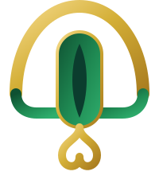

PT Signature Halal Indonesia mendampingi perusahaan Anda meraih sertifikasi halal BPJPH dengan proses yang tepat, efisien, dan sesuai regulasi — dari audit internal hingga penerbitan sertifikat.
PT Signature Halal Indonesia adalah firma konsultan halal yang berfokus pada pendampingan sertifikasi, audit, dan implementasi Sistem Jaminan Produk Halal (SJPH) bagi pelaku usaha di berbagai sektor. Kami menjembatani kompleksitas regulasi BPJPH & LPH menjadi langkah kerja yang jelas, terukur, dan efisien.
Dengan tim auditor internal bersertifikat dan pengalaman lintas industri, kami memastikan bisnis Anda tidak hanya lulus sertifikasi, tetapi juga membangun budaya halal yang berkelanjutan.
Kami menyediakan layanan menyeluruh untuk membantu perusahaan Anda memenuhi setiap tahapan sertifikasi halal sesuai regulasi yang berlaku.
Bimbingan lengkap proses sertifikasi halal melalui BPJPH & LPH, dari pengajuan hingga terbitnya sertifikat resmi.
SelengkapnyaPenyusunan dan audit internal Sistem Jaminan Produk Halal agar konsisten dengan standar HAS 23000.
SelengkapnyaPelatihan penyelia halal, tim manajemen, dan karyawan produksi untuk membangun kesadaran halal internal.
SelengkapnyaTinjauan kritis titik kritis kehalalan bahan baku, formula produk, dan rantai pasok dari hulu ke hilir.
SelengkapnyaPendampingan pemenuhan standar halal internasional untuk membuka akses pasar ekspor global.
SelengkapnyaPengelolaan perpanjangan sertifikat serta pemantauan berkala agar kepatuhan halal tetap terjaga.
SelengkapnyaEmpat tahap utama yang kami jalankan bersama klien untuk memastikan sertifikasi halal berjalan lancar dan tepat waktu.
Identifikasi kesiapan bisnis dan pemetaan titik kritis kehalalan produk.
Pembuatan manual SJPH, SOP, dan kelengkapan dokumen pendukung.
Pendampingan proses audit oleh Lembaga Pemeriksa Halal hingga sidang fatwa MUI.
Penerbitan sertifikat halal resmi BPJPH beserta pendampingan pasca-sertifikasi.
Konsultan dan auditor bersertifikat dengan rekam jejak lintas industri.
Strategi disesuaikan dengan skala bisnis dan kompleksitas proses produksi Anda.
Timeline kerja yang jelas dengan pelaporan progres berkala di setiap tahap.
"Proses pendampingan sangat rapi dan terstruktur. Tim Signature Halal membantu kami memahami setiap dokumen yang dibutuhkan hingga sertifikat terbit."
"Konsultannya sangat memahami regulasi BPJPH terbaru. Kami merasa terbantu terutama pada tahap audit dan penyusunan SJPH."
"Layanan profesional dengan komunikasi yang jelas. Sangat direkomendasikan untuk perusahaan yang ingin ekspor produk halal."
Tim kami siap membantu menjawab pertanyaan seputar sertifikasi, audit, maupun pelatihan halal untuk perusahaan Anda.
Jl. Sudirman Kav. 25, Jakarta Selatan, Indonesia
+62 812-3456-7890
info@signaturehalal.co.id
Senin – Jumat, 09.00 – 17.00 WIB